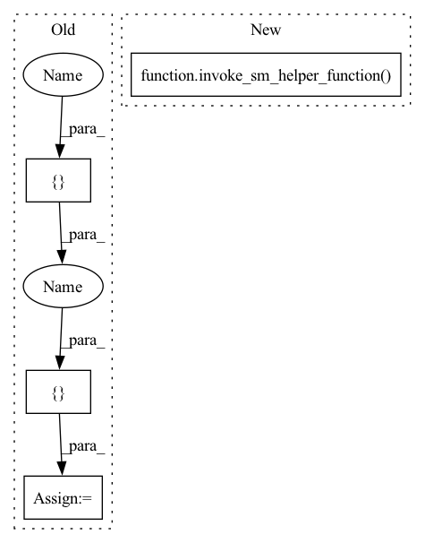

Pattern ID :37076

Before Change
validate_or_skip_smdataparallel_efa(n_virginia_ecr_image)
distribution = {"smdistributed": {"dataparallel": {"enabled": True}}}
estimator = TensorFlow(entry_point="smdataparallel_mnist.py",
role="SageMakerRole",
image_uri=n_virginia_ecr_image,
source_dir=MNIST_PATH,
After Change
@pytest.mark.efa()
@pytest.mark.parametrize("instance_types", ["ml.p3.16xlarge", "ml.p4d.24xlarge"])
def test_smdataparallel_mnist(ecr_image, sagemaker_regions, instance_types, py_version, tmpdir):
invoke_sm_helper_function(ecr_image,
sagemaker_regions,
_test_smdataparallel_mnist_function,
instance_types)
def _test_smdataparallel_mnist_function(
ecr_image, sagemaker_session, instance_types):
In pattern: SUPERPATTERN
Frequency: 3
Non-data size: 4
Instances
Fragment ID: 105594950
Project Name: aws/deep-learning-containers
Commit Name: 6e6f05c2bcaee3f8d5469eafb57ca3e6e820ac4a
Time: 2021-10-19
Author: 34056697+SergTogul@users.noreply.github.com
File Name: test/sagemaker_tests/tensorflow/tensorflow2_training/integration/sagemaker/test_smdataparallel.py
M Class Name: AnonimousClass
N Class Name: AnonimousClass
M Method Name: test_smdataparallel_mnist(5)
N Method Name: test_smdataparallel_mnist(5)
M Parent Class:
N Parent Class:
M File Name: test/sagemaker_tests/tensorflow/tensorflow2_training/integration/sagemaker/test_smdataparallel.py
N File Name: test/sagemaker_tests/tensorflow/tensorflow2_training/integration/sagemaker/test_smdataparallel.py
M Start Line: 92
M End Line: 108
N Start Line: 103
N End Line: 107
'>
Before Change
"info": "TF-{}-N{}".format(instance_types, 2)
}
distribution = {"smdistributed": {"dataparallel": {"enabled": True}}}
estimator = TensorFlow(entry_point="smdataparallel_throughput.py",
role="SageMakerRole",
image_uri=n_virginia_ecr_image,
source_dir=THROUGHPUT_PATH,
After Change
@pytest.mark.efa()
@pytest.mark.parametrize("instance_types", ["ml.p4d.24xlarge"])
def test_smdataparallel_throughput(ecr_image, sagemaker_regions, instance_types, py_version, tmpdir):
invoke_sm_helper_function(ecr_image,
sagemaker_regions,
_test_smdataparallel_throughput_function,
instance_types)
def _test_smdataparallel_throughput_function(
ecr_image, sagemaker_session, instance_types):
'>
Fragment ID: 105594949
Project Name: aws/deep-learning-containers
Commit Name: 6e6f05c2bcaee3f8d5469eafb57ca3e6e820ac4a
Time: 2021-10-19
Author: 34056697+SergTogul@users.noreply.github.com
File Name: test/sagemaker_tests/tensorflow/tensorflow2_training/integration/sagemaker/test_smdataparallel.py
M Class Name: AnonimousClass
N Class Name: AnonimousClass
M Method Name: test_smdataparallel_throughput(5)
N Method Name: test_smdataparallel_throughput(5)
M Parent Class:
N Parent Class:
M File Name: test/sagemaker_tests/tensorflow/tensorflow2_training/integration/sagemaker/test_smdataparallel.py
N File Name: test/sagemaker_tests/tensorflow/tensorflow2_training/integration/sagemaker/test_smdataparallel.py
M Start Line: 119
M End Line: 143
N Start Line: 138
N End Line: 142
'>
Before Change
validate_or_skip_smdataparallel(n_virginia_ecr_image)
instance_type = "ml.p3.16xlarge"
distribution = {"smdistributed": {"dataparallel": {"enabled": True}}}
estimator = TensorFlow(
entry_point="smdataparallel_mnist_script_mode.sh",
source_dir=MNIST_PATH,
role="SageMakerRole",
After Change
def test_distributed_training_smdataparallel_script_mode(ecr_image, sagemaker_regions, instance_type, tmpdir,
framework_version
):
invoke_sm_helper_function(ecr_image,
sagemaker_regions,
_test_distributed_training_smdataparallel_script_mode_function,
instance_type,
framework_version)
def _test_distributed_training_smdataparallel_script_mode_function(
ecr_image, sagemaker_session, instance_type, framework_version):
'>
Fragment ID: 105594948
Project Name: aws/deep-learning-containers
Commit Name: 6e6f05c2bcaee3f8d5469eafb57ca3e6e820ac4a
Time: 2021-10-19
Author: 34056697+SergTogul@users.noreply.github.com
File Name: test/sagemaker_tests/tensorflow/tensorflow2_training/integration/sagemaker/test_smdataparallel.py
M Class Name: AnonimousClass
N Class Name: AnonimousClass
M Method Name: test_distributed_training_smdataparallel_script_mode(5)
N Method Name: test_distributed_training_smdataparallel_script_mode(5)
M Parent Class:
N Parent Class:
M File Name: test/sagemaker_tests/tensorflow/tensorflow2_training/integration/sagemaker/test_smdataparallel.py
N File Name: test/sagemaker_tests/tensorflow/tensorflow2_training/integration/sagemaker/test_smdataparallel.py
M Start Line: 61
M End Line: 81
N Start Line: 62
N End Line: 69